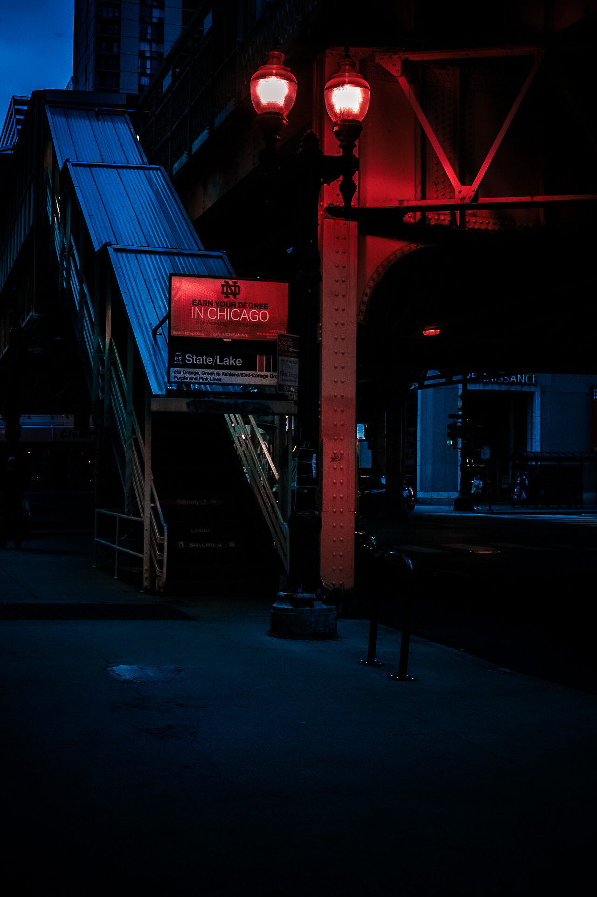

My introduction to photography was at school in 2016 our class had to make a news letter and take pictures around the school. As we were working on that I realized how much I enjoyed taking pictures and coming up with ideas. Two years later in 2018 I bought my first camera it was a canon 5D Mark4 which I still use to this day. After buying my camera I did multiple series of photos with different concepts. Everything I know about photography I've learned on my own by doing research and watching youtube videos on how to edit photos. It started as a hobby then I gradually started landing gigs. I've done different types of photography including street, potraits, cinematic, sports, and a bunch of freelance work. So far my favorite has been street I live in Las Vegas so I enjoy wondering around the city taking pictures usually at night when the Vegas lights are the brightest. I've had the opportunity to photograph Los Angeles and also Chicago two beautiful cities with amazing skylines. There's many other places I'd like to visit New York, Seattle, and Tokyo just to name a few. My journey has been great so far and I'm looking forward for what's next to come.
The art or practice of taking and processing photographs
The goal was to create scenes you would see in a horror moive
